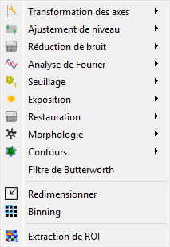

Traitement des images#
Cette section décrit les fonctionnalités de traitement d’image disponibles dans DataLab.
Voir aussi
Opérations sur les images pour plus d’informations sur les opérations qui peuvent être effectuées sur les images, ou Analyse sur les images pour des informations sur les fonctionnalités d’analyse des images.

Capture d’écran du menu « Traitement ».#
Lorsque le « Panneau Image » est sélectionné, les menus et barres d’outils sont mis à jour pour fournir les actions liées aux images.
Le menu « Traitement » permet d’effectuer divers traitements sur l’image ou le groupe d’images courant : il permet d’appliquer des filtres, de corriger l’exposition, de réduire le bruit, d’effectuer des opérations morphologiques, etc.
Géométrie#
Symétrie et rotation#
Crée une nouvelle image en effectuant une symétrie axiale ou une rotation des données de l’image sélectionnée. L’image peut être transformée par symétrie axiale horizontale, verticale ou diagonale (transposition).
Opération |
Description |
|---|---|
Symétrie horizontale |
Effet miroir le long de l’axe vertical |
Symétrie diagonale |
Transposer l’image (permuter les axes X/Y) |
Symétrie verticale |
Effet miroir le long de l’axe horizontal |
Rotation de 90° à droite |
Rotation de l’image de 90° dans le sens horaire |
Rotation de 90° à gauche |
Rotation de l’image de 90° dans le sens antihoraire |
Rotation de… |
Rotation de l’image d’un angle quelconque (défini par l’utilisateur) |
Distribuer les images sur une grille#
Fonctionnalité |
Description |
|---|---|
Distribuer sur une grille |
Distribuer les images sélectionnées sur une grille régulière |
|
Réinitialiser les positions des images sélectionnées aux coordonnées de la première image (x0, y0) |
 Réinitialiser les positions
Réinitialiser les positionsTransformation des axes#
Définir des coordonnées uniformes#
Crée une nouvelle image avec des coordonnées uniformes (c’est-à-dire avec une taille de pixel constante dans les directions X et Y).
Étalonnage polynomial#
Crée une image à partir de l’étalonnage polynomial (par rapport à l’axe des Z) de chaque image sélectionnée.
Note
L’étalonnage linéaire a été supprimé de l’interface utilisateur car il s’agit d’un cas particulier d’étalonnage polynomial de degré 1.
Ajustement des niveaux#
Normalisation#
Crée une image à partir de la normalisation de chaque image sélectionnée par maximum, amplitude, somme, énergie ou RMS :
Normalisation |
Equation |
|---|---|
Maximum |
\(z_{1} = \dfrac{z_{0}}{z_{\max}}\) |
Amplitude |
\(z_{1} = \dfrac{z_{0}}{z_{\max}-z_{\min}}\) |
Aire |
\(z_{1} = \dfrac{z_{0}}{\sum_{i=0}^{N-1}{z_{i}}}\) |
Energie |
\(z_{1}= \dfrac{z_{0}}{\sqrt{\sum_{n=0}^{N}\left|z_{0}[n]\right|^2}}\) |
RMS |
\(z_{1}= \dfrac{z_{0}}{\sqrt{\dfrac{1}{N}\sum_{n=0}^{N}\left|z_{0}[n]\right|^2}}\) |
Ecrêtage#
Applique un écrêtage sur chaque image sélectionnée.
Soustraction d’offset#
Crée une image à partir du résultat d’une correction d’offset sur chaque image sélectionnée. Cette opération est réalisée en soustrayant la valeur de fond de l’image, qui est estimée par la valeur moyenne d’une zone rectangulaire définie par l’utilisateur.
Ajout de bruit#
Génère de nouvelles images en ajoutant le même bruit à chaque image sélectionnée. Les types de bruit disponibles sont :
Bruit |
Description |
|---|---|
Gaussien |
Distribution normale |
Uniforme |
Distribution uniforme |
Poisson |
Distribution de Poisson |
Réduction de bruit#
Crée une image à partir du résultat d’un débruitage sur chaque image sélectionnée.
Les filtres suivants sont disponibles :
Filtre |
Formule/implémentation |
|---|---|
Filtre gaussien |
|
Moyenne mobile |
|
Médiane mobile |
|
Filtre de Wiener |
Analyse de Fourier#
Complément de zéros#
Crée une image à partir du résultat d’un complément de zéros sur chaque image sélectionnée.
Les paramètres suivants sont disponibles :
Paramètre |
Description |
|---|---|
Stratégie |
Stratégie de complément de zéros (voir ci-dessous) |
Lignes |
Nombre de lignes à ajouter (si strategy est “custom”) |
Colonnes |
Nombre de colonnes à ajouter (si strategy est “custom”) |
Position |
Position des zéros ajoutés : “bottom-right”, “centered” |
Les stratégies de complément de zéros font référence à la méthode utilisée pour ajouter des zéros à l’image, et peuvent être l’une des suivantes :
Stratégie |
Description |
|---|---|
next_pow2 |
Puissance de 2 supérieure (ex. : 512, 1024, …) |
multiple_of_64 |
Multiple de 64 supérieur (ex. : 512, 576, …) |
custom |
Taille personnalisée (définie par l’utilisateur) |
Filtre fréquentiels#
Les filtres fréquentiels suivants sont disponibles :
Méthode |
Description |
|---|---|
Butterworth |
Filtre de Butterworth, basé sur skimage.filters.butterworth |
Filtre gaussien |
Filtre gaussien |
Seuillage#
Crée une image à partir du résultat d’un seuillage sur chaque image, éventuellement basé sur des paramètres définis par l’utilisateur (« Seuillage paramétrique »).
Les paramètres suivants sont disponibles lors de la sélection de « Seuillage paramétrique » :
Paramètre |
Description |
|---|---|
Méthode de seuillage |
La méthode de seuillage à utiliser (voir le tableau ci-dessous) |
Classes |
Nombre de classes pour le calcul de l’histogramme |
Valeur |
Valeur de seuil |
Opération |
Opération à appliquer (> ou <) |
Les méthodes de seuillage suivantes sont disponibles :
Méthode |
Implémentation |
|---|---|
Manuel |
Seuillage manuel (paramètres définis par l’utilisateur) |
ISODATA |
|
Li |
|
Moyenne |
|
Minimum |
|
Otsu |
|
Triangle |
|
Yen |
Note
L’option « Toutes les méthodes de seuillage » permet d’appliquer toutes les méthodes de seuillage à la même image. Combinée avec l’option « distribuer sur une grille », cela permet de comparer les différentes méthodes de seuillage sur la même image.
Exposition#
Crée une image à partir du résultat d’une correction d’exposition sur chaque image sélectionnée.
Les fonctions suivantes sont disponibles :
Fonction |
Implémentation |
Commentaires |
|---|---|---|
Correction gamma |
||
Correction logarithmique |
||
Correction sigmoïde |
||
Egalisation d’histogramme |
||
Egalisation d’histogramme adaptative |
Algorithme CLAHE (Contrast Limited Adaptive Histogram Equalization) |
|
Ajustement des niveaux |
Réduit ou étend la plage de répartition des niveaux de l’image |
Restauration#
Crée une image à partir du résultat d’une restauration sur chaque image sélectionnée.
Les fonctions suivantes sont disponibles :
Fonction |
Implémentation |
Commentaires |
|---|---|---|
Débruitage par variation totale |
||
Débruitage par filtre bilatéral |
||
Débruitage par ondelettes |
||
Débruitage par Top-Hat |
Débruite l’image en soustrayant sa transformation Top-Hat |
Note
L’option « Toutes les méthodes de débruitage » permet d’appliquer toutes les méthodes de débruitage à la même image. Combinée avec l’option « distribuer sur une grille », cela permet de comparer les différentes méthodes de débruitage sur la même image.
Morphologie#
Crée une image à partir du résultat d’opérations morphologiques sur chaque image sélectionnée, en utilisant un disque comme empreinte.
Les fonctions suivantes sont disponibles :
Fonction |
Implémentation |
|---|---|
Top-Hat (disque) |
|
Top-Hat dual (disque) |
|
Erosion (disque) |
|
Dilatation (disque) |
|
Ouverture (disque) |
|
Fermeture (disque) |
Note
L’option « Toutes les opérations morphologiques » permet d’appliquer toutes les opérations morphologiques à la même image. Combinée avec l’option « distribuer sur une grille », cela permet de comparer les différentes opérations morphologiques sur la même image.
Contours#
Crée une image à partir du résultat d’un filtrage de contours sur chaque image sélectionnée.
Les fonctions suivantes sont disponibles :
Fonction |
Implémentation |
|---|---|
Filtre de Canny |
|
Filtre de Farid |
|
Filtre de Farid (horizontal) |
|
Filtre de Farid (vertical) |
|
Filtre de Laplace |
|
Filtre de Prewitt |
|
Filtre de Prewitt (horizontal) |
|
Filtre de Prewitt (vertical) |
|
Filtre de Roberts |
|
Filtre de Scharr |
|
Filtre de Scharr (horizontal) |
|
Filtre de Scharr (vertical) |
|
Filtre de Sobel |
|
Filtre de Sobel (horizontal) |
|
Filtre de Sobel (vertical) |
Note
L’option « Tous les filtres de contours » permet d’appliquer tous les algorithmes de filtrage de contours à la même image. Combinée avec l’option « distribuer sur une grille », cela permet de comparer les différents filtres de contours sur la même image.
Gommer une zone#
Gomme une zone de l’image définie par une région d’intérêt (ROI).
Note
La région à effacer est définie par l’utilisateur via une boîte de dialogue. Elle peut consister en une seule ROI ou plusieurs ROIs avec différentes formes (rectangulaire, circulaire, etc.). Notez que la ROI définie ici n’est liée à aucun objet ; elle est utilisée uniquement pour spécifier la zone à effacer dans l’image. En particulier, elle est indépendante de la ROI de l’image, le cas échéant (cette dernière est affichée dans la boîte de dialogue comme une zone masquée).
Redimensionner#
Crée une image qui est le résultat du redimensionnement de chaque image sélectionnée.
Binning#
Regroupe des pixels adjacents de l’image en un seul pixel (somme, moyenne, médiane, minimum ou maximum de la valeur des pixels adjacents).
Rééchantillonnage#
Génère de nouvelles images en rééchantillonnant chaque image sélectionnée. Les paramètres suivants sont disponibles :
Paramètre |
Description |
|---|---|
math:x_{min} |
Coordonnée x minimale de l’image de sortie |
\(x_{max}\) |
Coordonnée x maximale de l’image de sortie |
\(y_{min}\) |
Coordonnée y minimale de l’image de sortie |
\(y_{max}\) |
Coordonnée y maximale de l’image de sortie |
Mode |
Mode de définition de la taille de l’image : “Taille des pixels” ou “Taille de l’image de sortie”. Le mode “Taille des pixels” permet de définir la taille des pixels de la nouvelle image, tandis que le mode “Taille de l’image de sortie” permet de définir le nombre de pixels de la nouvelle image. |
ΔX |
Taille des pixels selon la direction x (si le mode “Taille des pixels” est sélectionné) |
ΔY |
Taille des pixels selon la direction y (si le mode “Taille des pixels” est sélectionné) |
Largeur |
Largeur de l’image de sortie en pixels (si le mode “Taille de l’image de sortie” est sélectionné) |
Hauteur |
Hauteur de l’image de sortie en pixels (si le mode “Taille de l’image de sortie” est sélectionné) |
Méthode d’interpolation |
Méthode d’interpolation à utiliser : “nearest”, “linear”, “cubic” |
Valeur de remplissage |
Valeur à utiliser pour les points en dehors du domaine de l’image d’entrée (si None, la fonction utilise NaN pour l’extrapolation) |